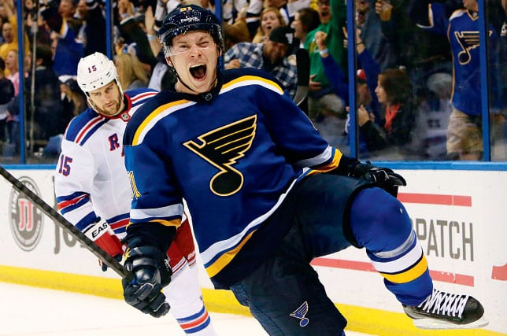
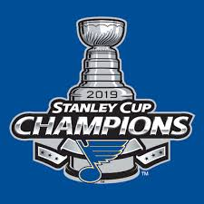

Les Blues de Saint-Louis champions de la Coupe Stanley
Les Blues su remonter de l'arrière en deuxième moitier de saison eux qui était bon dernier au classement général en Décembre dernier
Le changement d'entraîneur a été benifique pour la troupe du Missouri. L'équipe c'est mit à gagner lorsque que Craig Berube à fait son apparition dans le décors.
Envoyé Gloria!!!!
Les Champions ont fait de Gloria leur chanson thème lors des précédente Series éliminatoire de la Coupe Stanley. Voici la chanson :


L'histoire de cette équipe
En 1967, la ligue décide de faire un repêchage d'expansion pour faire doublé le nombre d'effectif
en ajoutant 6 nouvelles équipes. Les Blues de Saint-Louis,
les North Stars du Minnesota, les Kings de Los Angeles, les Flyers de Philadelphie, les Penguins de Pittsburgh et les
Seals de Californie font leurs apparitions dans la ligue.
La ville de Saint-Louis à été choisie devant la ville de Baltimore sur l'insistance des Black Hawks de Chicago.
Les nouveaux propriétaires ont dépensés plusieurs millions de dollars pour améliorer l'aréna de Saint-Louis qui,
était agée de 38 ans
Les Blues, sous la barre de Scotty Bowman, ont su être de calibre pour dans la faible division Ouest.
La formule des séries garantissait à une équipe d'expansion de paticiper à à la finale de la Coupe Stanley.
Malheureusement pour eux, ils perdent la Finale dans leur 3 premières occasions, qui se sont produient lors de leur
3 premières saisons dans la ligue, dont 2 fois contre le CH et l'autre fois contre les Bruins de Boston
Les succès de l'équipe ont d'abord passer par le propriétaire Sid Salomon qui, avec les bénifices de l'équipe,
décida de traiter ses joueurs comme des rois. Le seul moyen que les joueurs ont senti pour le remercier était
de tout donner sur la glace à chaque soir.
Les années 1970 ont été très difficile pour les Blues. Scotty Bowman quitte pour aller à Montréal,
les meilleurs joueurs de l'équipes sont échangés ou ont prit leurs retraites. Au cours de cette période,
la franchise connait de sérieux problèmes financièrements. La famille Salomon (les propriétaires de l'équipe)
ont même déjà pensés à la faillite.
Malgré la grandes quantité de joueurs de talents que l'équipe à pu se procurer comme : Wayne Gretzky,
Brett Hull, Jacques Plante, Scott Stevens, Peter Stastny, Chris Pronger, Adam Oates, Bernard Federko et plusieurs autres,
les Blues n'ont jamais su gagner comme ils le devaient selon les espoirs placés en eux.